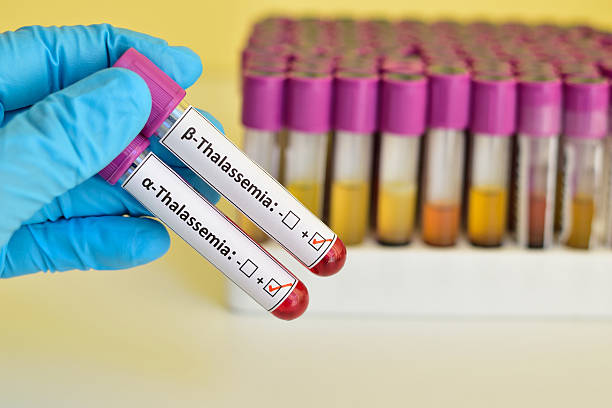

Thalassemia
Thalassemia is an inherited blood disorder caused when the body doesn’t make enough hemoglobin, an important part of red blood cells.
There are two main types of thalassemia- Alpha thalassemia & Beta thalassemia,which are further divided into Thalassemia major and Thalassemia minor
Read more
